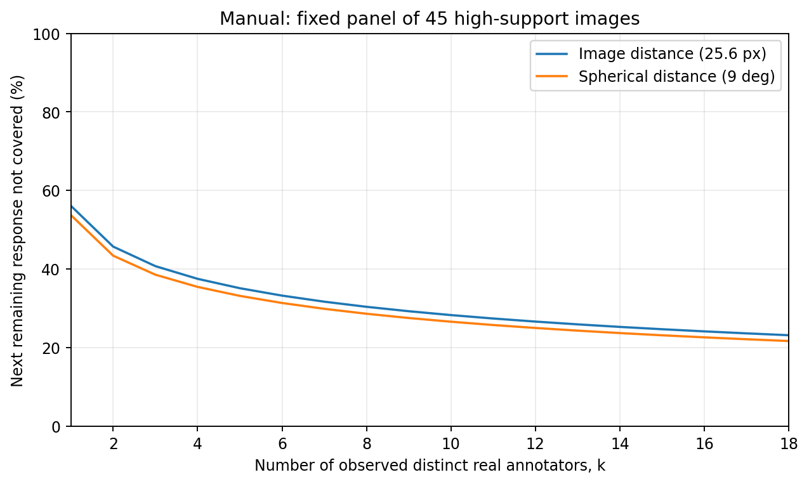
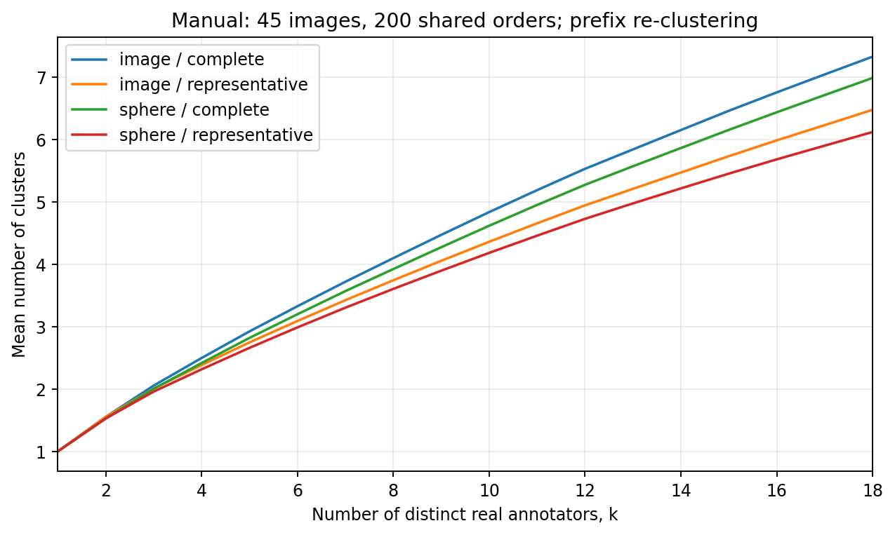
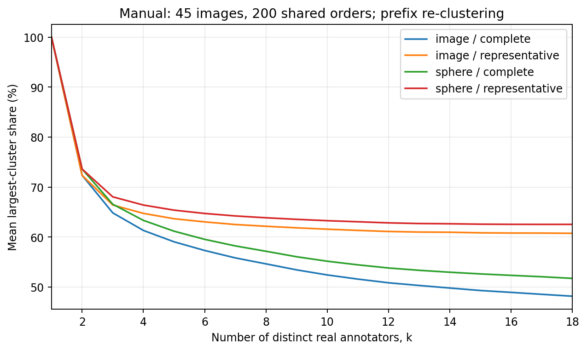
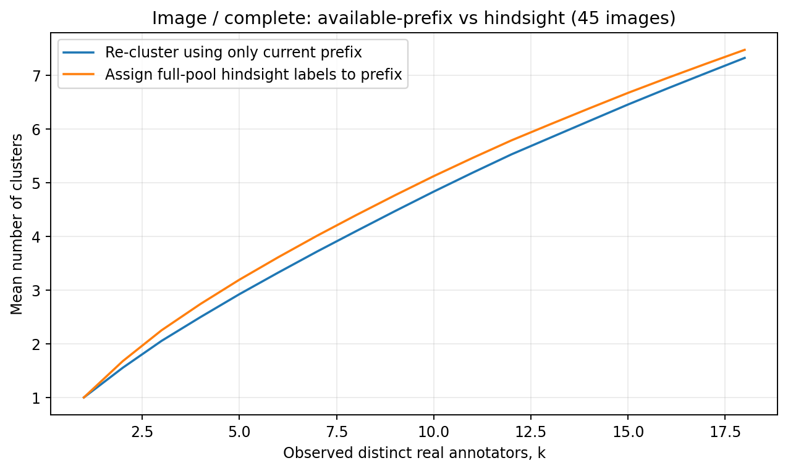
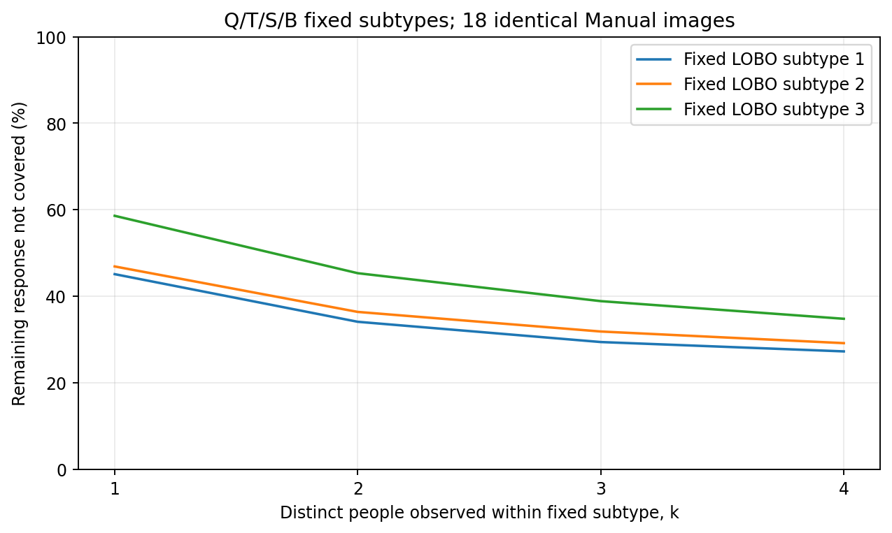
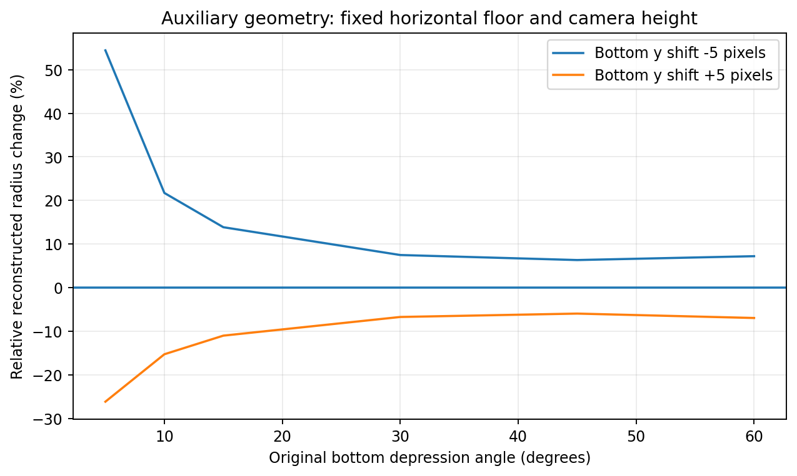
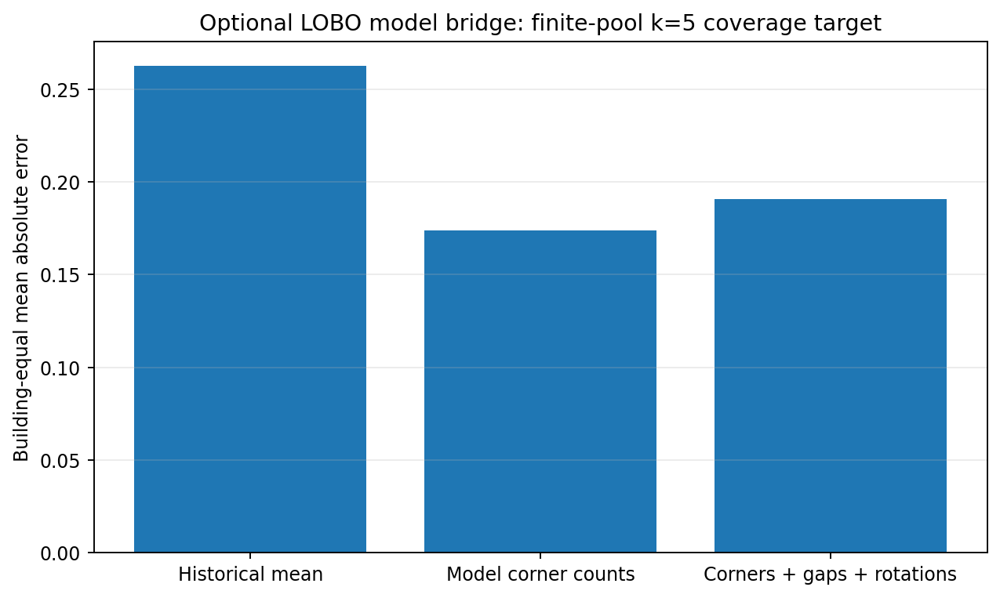

基准：Sparkling-Flames/3D_Manhattan_label，分支codex/pro-clustering-ready-20260920，提交457081270c88b719f70d96a721ec0c810a76a2d1。本报告由本轮实际运行结果生成；不是对RC2报告的再次转述。正式Paper A合同、原始导出、点位、冻结时间及既有人群排除均未改。
当前可以进入本地审核的主候选是：保留原上下端点的图上二维最大距离＋真实代表半径分组。以现有中间探针25.6像素作为工作展示值，配套相同距离、相同25.6像素的完整链接作为严格整簇对照；17.0667/34.1333像素及球面6/9/12°全部保留敏感性结果。这里推荐的是下一步可检查的工作版本，不是宣称图上距离已经胜出，更不是把25.6像素冻结为语义容差。
理由不是“组数少、曲线早平”。图上代表半径在8项已决定的指定作答对上均符合用户关系，能回应已知近对被拆；但图上17.0667像素探针、球面代表6°也同样符合这8项。因此这些开发案例不能唯一确定距离或容差。完整链接能保证同组两两接近，却会拆开部分用户认为相近的作答；代表半径只保证接近代表，确实包含较远的成员对。所有候选都仍需整簇审核。
第二个结论更重要：改变分组规则明显改变簇数、主簇比例和人员单人簇特征，却不改变固定距离下的成对未覆盖。因此不能把“统计上更集中”直接当作“少数表达已经覆盖”或“真人已经趋同”。
第三个结论是：人员历史倾向有可复用信息，但新几何单人簇分型对测量方案敏感。旧人员轴和留建筑名单可完整复现，不能说既往人员研究没有具体实施；同时，换成簇法后直接重命名“稳定/不稳定人员”会受到算法隔离的影响。
第四个结论是：单对人工对应替换适合解释争议，但不一定形成全体成员一致的距离系统。uNb-21已确认映射应保留，不应重新询问；然而只替换W006/W013这一对后，对其他成员仍沿用旧对应，会产生不满足三角不等式的混合表。它只能作为明确标记的后见敏感性视图，不能悄悄变成默认预测输入。
冻结输入包含2,501份canonical身份。沿用W019/W026的113份既有排除后保留2,388份；角色分开可比较2,381份；具有唯一数值上下绑定候选2,343份。历史范围239个图片×条件单元、214张图片、22栋建筑；绑定方案可算238单元。S9hNv5qa7GM-07有4份保留观测、2份角色可比、0份唯一绑定，仍留在覆盖表，未被填成零距离或单人簇。
本轮复算13,341个同点数绑定作答对、119,046条逐端点比较，以及5,712个“单元×对应视图×距离×阈值×成簇规则”分区。全部成员关系与指定代表相同。独立方向向量公式对完整未舍入距离矩阵的最大误差为1.14e-13；与旧导出逐端点表比较约5×10⁻¹⁰，主要受原表小数输出精度限制。
这并不意味着所有文件逐字节相同。源结果中有约10⁻¹⁰量级的CSV舍入差异和约10⁻¹⁴的JSON浮点差异，分区与代表未改变。source_replay_comparison.csv逐文件保留了误差；不能把数值一致写成全部字节一致。
自动绑定另外用精确子集动态规划复核，没有复用源Hungarian求解器；自由瓶颈匹配用图匹配与穷举小例核对。完整链接仍调用同一个公开SciPy基础函数，本轮独立的是输入装配、距离公式、代表算法、成员比较和下游统计，不声称替换了SciPy内部实现。唯一数值最优也不是物理对应已确认。
Project28两项有效点修复是唯一相对旧RC1的有效几何变化：W002的8ffe08f072e2b12e坐标更正仍28点；W018的9b8f8bec4da82b48删越界点21→20。原始点逐份未改，身份和票数未增加。人工借用信息补出的两份点分别做不进入训练/预测的敏感性视图，不把它们伪装成独立首答。
依据：总审计、逐份资格、逐单元覆盖、版本变化、各自与共同池曲线。本轮核对的是打包的冻结记录、清单与既有来源链；没有重新解析18份运行时原导出或active logs。
下表是同一2,343份绑定池，在9°/25.6px中间探针上的自动对应结果。
| 距离 | 分组规则 | 总组数 | 单人组 | 近对分开 | 同组超阈值对 |
|---|---|---|---|---|---|
| image | complete | 981 | 619 | 2351 | 0 |
| image | representative | 896 | 605 | 103 | 791 |
| sphere | complete | 948 | 601 | 2068 | 0 |
| sphere | representative | 869 | 579 | 98 | 747 |
“近对分开”指作答对本身在容差内，但所在最终分组不同；它不自动等于语义误拆。“同组超阈值对”只表示代表组中的两成员彼此较远，不自动等于语义误并。图上完整链接的2,351对近对被拆，与代表半径的103对近对被拆/791对组内超阈值，反映的是两种不同约束，而不是一个准确率排行榜。
尤其不能只展示代表与每位成员接近，而忽略成员彼此远；也不能只展示两份作答接近，就断言它们所属的完整链接两大簇必须合并。所有成员、代表、最远成员和多代表兼容关系均已输出。成员/代表表、组内极值、近拆与远并。
不同有效总点数继续硬分开。这是本轮“严格完整作答表达”的粒度选择，不是不同物理房间的证明；6,828个不同点数作答对以不可相容门处理，不能把程序哨兵1,000,000当成真实角距。
在当前共同池中，固定顺序的上下绑定最大端点分数，与top/bottom分开固定顺序分数相同。与固定绑定相比，循环绑定改变168对距离，但在9°处只有1对从超阈值变为阈值内；自由绑定改变315对距离，其中24对在9°处跨界。自由匹配更小只说明对应约束变弱，不授权纠正原始标注或宣称物理对象对应正确。全部固定、循环、自由诊断及逐端点top/bottom残差见独立成对表。
W006/W013采用已确认映射[1,2,4,3,5,6]后，球面最大残差32.500091°→4.592694°，图上残差92.567282px→14.435625px。变化完全来自跨人对应，原点未动。这两份已经由用户判断相近，4.592694°不是新的全局容差。
完整链接仍分开，是因为W006所在组的W017与W013继续使用自动对应，残差仍32.500091°/92.567282px。阻挡成员是W017—W013，而不是已确认的W006—W013这一对。数值上W017和W006的固定表示距离为0，却因只替换一对，使二者到W013的距离不同。这不是推翻人工判断，而是说明局部人工替换与其他未确认边仍不一致。
本轮发现10条按“度量×三人组不等式”计的违反，均出现在该人工后见视图；自动固定对应视图未出现。应保留局部确认，并让本地只核对W017等其他成员的对应，不重问已确认那一对，也不自动传播裁决。相关表：指定对比较、阻挡成员、三角关系诊断。
每单元每种距离用50种输入排列检查完整链接并列选择。在9°/25.6px下，仅观察到两处单元×距离有不同可实现分区：yq-26球面改变最多69对同簇关系；rPc-15图上改变最多45对。生产工作版仍按canonical身份稳定排序；这些额外排列仅用于诊断，未按最早收敛或最符合意见选择新并列规则。并列选择明细、两套完整成员。
16项原文全部逐条回应；其中8项有明确最终关系，8项仍暂缓。defer=true优先于已填的关系，空下拉框不抹掉文字。yq-15保留原文并另记W017 p10/W018 p6的后续澄清。
图上代表半径在17.0667px和25.6px均满足8/8指定对；球面代表6°也满足8/8。图上完整链接三档均6/8。球面代表9°为7/8，其中x8-09是用户明确要求保留差异、却被合并的案例：8.162378°低于9°，而28.349151px高于25.6px。这个对比只支持测量差异的具体解释，不支持从8例选出普适容差。
S9-12的W012、wc-46的W008仍有绑定歧义，保留角色分开诊断，不制造绑定结果。其余遮挡评论区分“试图标同一位置”“对应是否明确”“实际位置偏差”和“整簇归属”。b8-17中W031遗漏该处与W027/W029的定位差不是同一种观测；b8-19中的W018另做第三人核查。
完整逐项答复：COMMENT_REPLIES_ZH.md。逐项全部当前成员、代表、最远成员、不同有效点数、指定端点和原编号均在同目录。当前本地短队列为15项：原暂缓、已有方法冲突、两个并列选择问题及uNb其他成员对应；没有加入普通对照问卷，没有新增视觉裁决。全历史214图/239单元仍待工作方法确定后逐图验收。
生成200条全局24位真实人员顺序，逐图投影；每加入一位真实人员重新分簇。不同距离/分组使用相同图像、人员、条件和顺序。输出3,637,260个去重后的“方法×前缀”节点，及477,600个进入步骤，包含两份补点敏感性子池；这些是复用历史数据的计算，不是新增人数或独立实验数量。
主汇总采用固定高人数面板：Manual 45图14楼、Semi 18图、历史OOS条件9图，各图至少19位绑定候选，统一展示k≤18。各图自身完整历史长度全部保留；低人数图不被删除，也不因不能画长曲线就贴“不收敛”标签。这里OOS是当前数据条件字段，不等同于所有人工判OOS图像的完整集合。
精确不放回计算：随机观察k位不同真人后，再从剩余历史池抽一位，其表达没有任何已观察近邻的概率。Manual固定45图，图片等权结果：
| 已观察真人k | 图上未覆盖% | 球面未覆盖% |
|---|---|---|
| 3 | 40.7535 | 38.5761 |
| 5 | 35.1379 | 33.1847 |
| 8 | 30.4061 | 28.6386 |
| 12 | 26.6475 | 25.0221 |
| 16 | 24.1553 | 22.6351 |
这个量与分组规则无关；完整链接和代表半径在同一距离下逐值相同。图上到k=16仍约24.16%，不能被“代表组更少”抹掉。当仅留最后1位历史人员时，图上约21.81%、球面约20.46%的未覆盖底限来自该有限池中本就没有其他容差内邻居的人。它描述当前池，不证明未来新人不会重复这些少数表达。

以下为Manual同45图、同200顺序、k=8的前缀重聚结果。回放平均未覆盖是Monte Carlo均值，略不同于上表精确有限池值；不是公式矛盾。
| 距离 | 分组 | 前缀平均簇数 | 平均单人簇数 | 平均主簇比例% | 回放未覆盖% |
|---|---|---|---|---|---|
| image | complete | 4.0961 | 2.7488 | 54.6542 | 30.4593 |
| image | representative | 3.7420 | 2.5840 | 62.1736 | 30.4593 |
| sphere | complete | 3.9217 | 2.5839 | 57.1750 | 28.6893 |
| sphere | representative | 3.6038 | 2.4334 | 63.8722 | 28.6893 |
例如图上完整链接约4.096簇、主簇54.65%；代表半径约3.742组、主组62.17%。人没变，距离没变，分组摘要变了。人数—簇数与人数—主簇比例可作为研究结果，但不能单独定义共识或正确性。


图上完整链接k=8，前缀重聚平均4.096簇，后见全池标签投影约4.394簇。后见标签提前包含后续成员影响。代表法亦可发生差异，只是大小和方向不同。两种视图分别输出，不用全池标签冒充当时信息。
增加一份标注甚至可能让重新分簇后的K下降。实际例子：q9-02某顺序加入第23位W029后，图上完整链接3簇→2簇，231个旧成员对中106对关系改变；uNb-06加入第22位W011后，图上代表9组→6组。这是算法重分区，不是旧标注员撤回观点。具体前后成员：实例JSON。

主表将至少2人重复支持且占比≤20%的组称为“重复支持少数组”，这只是可解释的描述定义，不是真实类别门槛。另输出支持下限1/2及比例上限10%/20%/1/3的敏感性。所有单人作答仍进入适用的总体覆盖、簇数和成员变化；不因为未满2人从数据中消失。固定全池未见质量在k=N必为0是穷尽有限池的算术结果，不能据此宣称未来人员收敛。敏感性表。
保留旧303套配置清单及1,212条去重的历史具名组/未分类记录；实际重算既有Q2/Q3、QT2/QT3、QTSB3及Semi三指标TRI3六种最小候选。在22个留建筑折中重算4,598条轴画像、2,992条人员归属；归属变化为0，画像与旧导出最大舍入差约5×10⁻¹¹。没有用新的四分位名单替代旧研究，没有强定四类或均分。
Q使用历史OSPA30参考偏差，不等于当前最大局部距离；T使用经资格检查的冻结log(1+active seconds)；S保留scope误接受/误拒绝两轴；B保留编辑幅度和净改善。Semi三指标是编辑、时间、最终参考偏差，不是正式Q_GT/R_peer/F_struct三轴。旧参考与初始化分数没有借换簇法重新定义，两个Project28新修复没有被捏造出历史参考轴。B中的净改善在同一任务内与最终参考偏差有代数关联，不能夸大为完全独立的能力维度。
冻结时间SHA保持917d7ac446a8dfdf85daf627ada285b4bf5311df156f2afff522643988206983。本轮只复核/复用冻结值，不重新审计active logs，不以lead_time填补缺失。几何可计算、参考可评分、时间可用分别保留分母。旧轴对账、留建筑名单。
除历史全池名单的明确后见曲线外，进一步固定六套留建筑名单，在944个实际可用人员子池上，按同200条顺序完成2,469,616个方法×前缀节点。当前组内主比较只用中间探针，避免再扩张搜索。每个子池删除借用信息补点用于独立分析，仍保留原研究观测。
示例图采用同18张Manual图片、每个QTSB子类至少5位实际人员的共同交集，只画k=1—4，不把不同k下变化的图片分母当成同一面板。

TRI3低编辑组在22个折均为W006/W011/W021。在29张Manual高人数图上其可用子池只有3人；k=3时没有剩余同类真人可检验。images_with_remaining_person=0显式保留，未覆盖为未定义，不是0。不能据此宣称这类人在15或20人时仍稳定。其余类型/组合按真实可用人数报告，不凑人数。
新几何轴是“同图同条件的成对不相容比例”和“是否落在单人组”，明确独立于旧Q/T/S/B。训练时排除目标建筑及借用信息补点；再用旧任务截距消除和简单Ward候选2/3组查看名单迁移，不把新分组命名为认真/不认真。
只把图上完整链接换为图上代表半径，单人组特征产生如下留建筑名单变化（标签先最优对齐）：
| groups | 留建筑折数 | 平均ARI | 平均迁移人数 |
|---|---|---|---|
| 2 | 22 | 0.440875 | 4.6818 |
| 3 | 22 | 0.595481 | 3.9091 |
对新几何连续轴，留建筑同行中心化误差相对零效应基线有约5%—8%的MSE改善；成对分歧比单人组特征更稳定。区间是对固定留出预测按建筑重抽的条件性描述，不是完整重新训练bootstrap，也未对多轴多配置进行确认性多重检验，不能因此宣布已发现稳定人格分类。新轴与预测、名单迁移、换楼稳定性。
一个具体反例：W037的97份当前绑定候选中，图上完整链接有52次单人组，分为26次无同点数同伴、22次有同点数但无容差近邻、4次有近邻却被分区孤立。图上代表法变成53次，最后一类5次。代表法在总体减少单人组，并不保证每个人单人组数都减少；这些次数也不是错误次数或动机证据。逐人原因分解。
在45张高人数Manual图上，每图固定4位未参与团队的验证人员，所有配置共用同一验证人集；从其余实际人员枚举185,703个不同四人团队。团队名单、验证名单、逐团队指标、精确子类组成均保存。相同团队可以被不同人员分类方案重新命名，但没有新增独立票。
以QTSB3、图上中间探针为例：AAAA对剩余固定验证人的未覆盖约41.23%，AABC约40.96%，图片等权差仅−0.27个百分点；建筑等权差约+0.11个百分点，条件性区间跨0。其他配置、阈值也不是一致的AABC优势。不能仅凭某些组合更整齐就宣称配比优化成功；反之，这也不否定某些具体类型有用。全部对照。旧RC2球面8,085行组合汇总亦复现，团队数逐项相同。
在12,074个可绑定上下点对上，固定相机高度为尺度单位1、水平地面，不进行Manhattan拟合；分别扰动top-y、bottom-y、共同x，幅度±1/±5/±10像素。原始上下x差、近地平线、条件、投影越界/跨地平线失败均保留。原图遮挡与围墙连接顺序没有由本轮宣布已验证。
在此条件下，top-y只改变推导的高度，不改变底部射线与地面的交点半径；共同x改变方位，不改变半径或高度；bottom-y改变深度并进而改变推导高度。相同5px竖直偏移在top/bottom的方向角误差都是1.7578125°，没有因为bottom而自动更大。
但重建深度是非线性的：底部俯角5°，bottom-y +5px使半径约−26.17%，−5px使半径约+54.44%；俯角30°对应约−6.73%/+7.49%。正负偏移并不对称。51个基准点对的bottom俯角在5°内，单列近地平线；跨地平线不钳成一个有限深度。这支持3D敏感性诊断，不支持直接增加bottom权重。基准与逐次扰动。

没有新训练DINO或引入复杂模拟器。只用包内既有模型角点数、模型间差异和旋转差异，留整栋建筑预测“k=5时剩余有限池作答未覆盖”。45图14楼，训练标准化与缺失填补仅使用训练楼；不读取目标楼标注选层、选参数或选图片。
| 模型 | 图片 | 建筑 | 楼等权MAE |
|---|---|---|---|
| history_mean | 45 | 14 | 0.262597 |
| model_corners | 45 | 14 | 0.173888 |
| model_corners_gaps_rotations | 45 | 14 | 0.190736 |
仅模型角点数优于总体历史均值，加入全部差异/旋转特征反而稍差。这说明可先保留简单基线，不为复杂而复杂。目标仍是有限历史池统计，不是标注前真实人群不确定性的真值，更不是未来停止人数。既有同房registry仅核对当前覆盖，未凭未分组图发明独立房间；106人工难易tag没有被替换成旧difficulty字段，也没有用于本轮训练。

本地接回时，先用本包相同源SHA复算成员集合和数值。工作界面可以默认图上代表半径、并排完整链接；同时显示距离、所有成员、代表、组内最远对、近对阻挡、多个代表兼容以及不可绑定原因。人工对应记录必须绑定图像、条件、canonical ID、有效点版本、原点号和完整映射；只改变派生对应，不动点、不新增票、不自动推广。
uNb先核对额外成员边的一致性，保持已确认W006/W013为只读；S9/wc绑定歧义先解决，不能由选较小距离代替人工。rPc-15和yq-26的并列选择问题记录为分区选择敏感性，不通过改ID或选更好看分区消除。随后按既有全历史清单逐图检查214图/239单元，当前15项短队列不是全量验收替代。
本包明确不宣称：全量视觉通过、最终语义阈值已冻结、已发现稳定四类人员、某种配比有因果优势、已预测未来真人停止人数、480份计划已经完成，或已重新审计原始active logs。数值链条通过不等于分簇语义正确；保留未决就是结果的一部分。
inputs/source_snapshot.zip是已验证的源提交数值包，Git blob为9cf824b5a77deeccd45b569d5f8727b29810a36a，SHA-256为47e446e38021acb38008ccf6594f60671852712252a7a966c5c1a72b81dd7158。不是外链占位，运行时自动安全解压，不需本机D/C盘、原Studio服务器或联网下载数据。
安装requirements.txt后，从根目录运行：
python -X utf8 -B code/run_all.py --out results_recomputed --jobs 4
入口拒绝覆盖非空结果目录。只核对距离/分区可加--audit-only；完整模式运行所有人数/人员/审核/3D/最小模型与42项测试。重画图表：python code/make_figures.py。软件版本及固定参数在根目录JSON中。
该入口刻意固定本次2501份源版本，用于审计复现，不是新批次导入器。新数据先走仓库现有身份/修订/冻结时间接入流程，生成新版本后再更新源绑定和基线审计；不能把新数据塞入旧ZIP后沿用本报告的验收状态。
文件完整性见根目录manifest与交付检查；数值逐项独立核验见各*_AUDIT.json。本轮已在新的源目录及新结果目录完成第二次全管线隔离复算，10个步骤全部退出码0，42项测试通过。100个数值文件中98个解压后的内容哈希完全相同，1个汇总表最大差3.55×10⁻¹⁵，1个源结果清单仅因gzip时间头导致文件哈希不同且双方清单均已正确核验。具体见根目录ISOLATED_REPRODUCTION.json与逐文件比较表；不把单元测试等同于全管线复算。